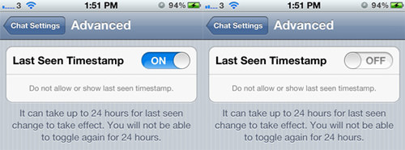
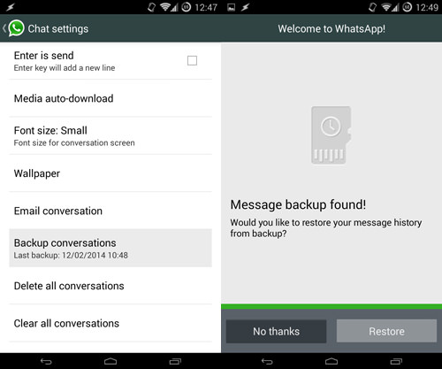
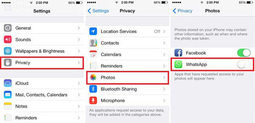
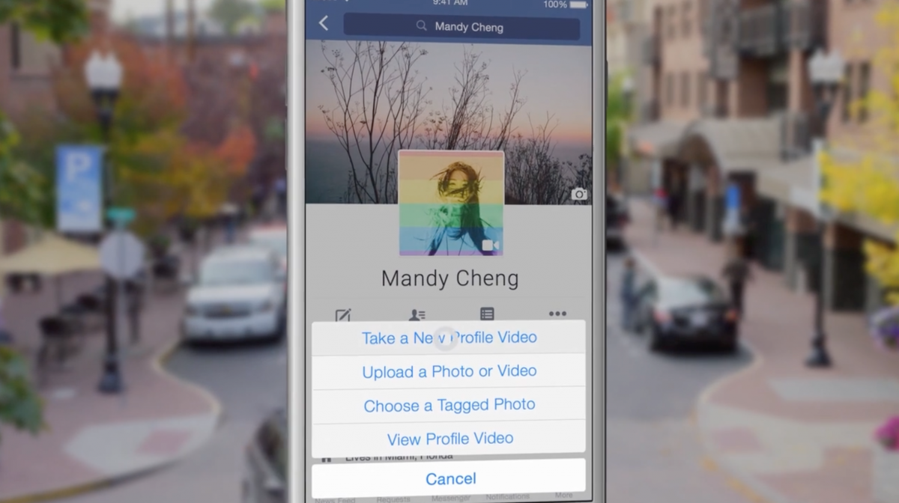
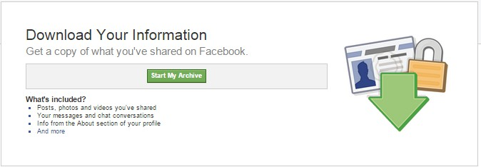
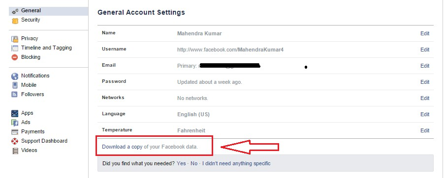

1. Hide "Last Seen" Timestamp
By default, WhatsApp shows a "last seen" timestamp, telling other users the last time you were on WhatsApp. Some of you may want to disable this timestamp, for privacy reasons. You can disable this timestamp on both iOS and Android.
If you’re an iOS user, you’re in luck, since all you need to do is go into Settings > Chat Settings > Advanced and set Last Seen Timestamp to Off.
If you’re an Android user, you won’t have access to this setting from the app itself. Instead, you’re going to have to rely on a third party app such as Hide WhatsApp Status. The app disables your WiFi and data connection when you open WhatsApp.
Once you exit the app, your WiFi and data connections are reactivated, WhatsApp will sync, and your messages will be sent.
2. Backup And Restore WhatsApp Chats
WhatsApp makes automatic backups of your chats, but you can also make a manual backup. On iOS, it’s Settings > Chat Settings > Chat Backup, then tap Back Up Now.
On Android, just go into Settings > Chat settings and tap Backup conversations to create a backup. This won’t backup your media, so you’ll need to use a file manager to copy the media folders in /sdcard/WhatsApp/Media.
There’s no way to restore chats directly from WhatsApp, so if you want to restore a backup you’re going to have to uninstall and reinstall WhatsApp. When you start WhatsApp after the reinstall, you should be prompted to restore your most recent backup. Just follow the procedure and your chats should all be back.
3. Stop WhatsApp Images from Appearing In Gallery Or Camera Roll
Having WhatsApp images in your Gallery or Camera Roll can be very annoying; maybe the images are somewhat private, or you just don’t like having these images clutter up your Gallery or Camera Roll. You can fix this on both iOS and Android.
On iOS, it’s pretty simple; just go to Settings > Privacy > Photos and then turn the WhatsApp switch off.
On Android, you have to create a .nomedia file in WhatsApp’s images or video directories. To do this, you need a file explorer such as ES File Explorer. Navigate to the images or video folders. Tap the New button in the lower left, pick File and create a file named .nomedia. This will stop the Gallery from scanning the folder.
4. Stay on top of the hottest news with what's trending on Facebook.
The topics that are currently being talked about the most on Facebook are featured on the Trending list, which is accessible to the right of the News Feed on the desktop and under the search bar in Facebook's mobile app.
5. Turn off auto-playing videos in your News Feed.
If you don't want videos on Facebook automatically playing in your News Feed, make sure to turn the setting off.
Under the "More" tab in the Facebook mobile app, select "Videos and Photos." You can choose to auto play videos over cellular and WiFi connections, just WiFi, or never.
6. Your Activity Log shows everything you've liked, shared, and commented on in the past.
If you don't want videos on Facebook automatically playing in your News Feed, make sure to turn the setting off.
Under the "More" tab in the Facebook mobile app, select "Videos and Photos." You can choose to auto play videos over cellular and WiFi connections, just WiFi, or never.
7. How to recover Deleted Facebook Messages
This trick may be secret for you. If unfortunately if lost your messages and you’re searching to get back these messages again in your inbox, then this trick will be best for you. As I wanna tell you that Facebook our all information saving in archive, And Facebook also allows downloading your archive to your computer, Using that we can we can explore our all deleted Facebook message and all conversation back.Let me show complete method about this. First, you need to go Setting Tab. Now click on General Tab you will See Download a copy of your data. Just click on Download a copy option. You will redirect new Page, just click om Start my Archive.
Next step will need you account password just feel it. Then all conversation report with downloading will send you on Email.
Just download the archive and watch all data of your account.